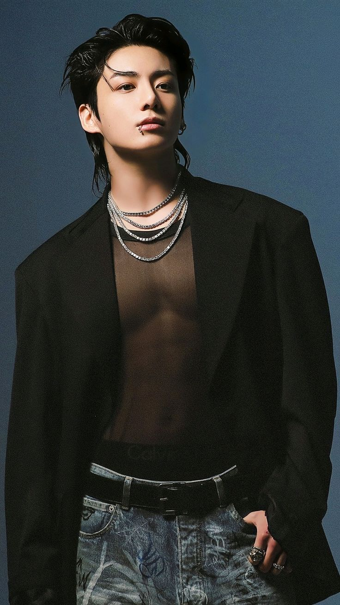
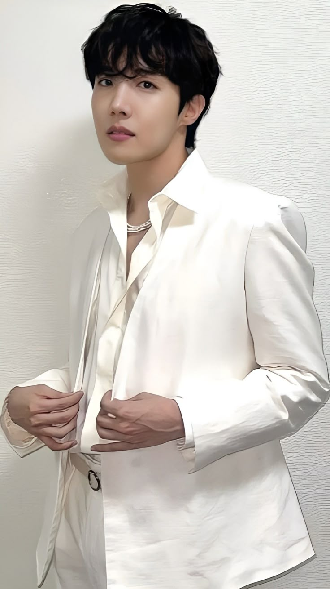
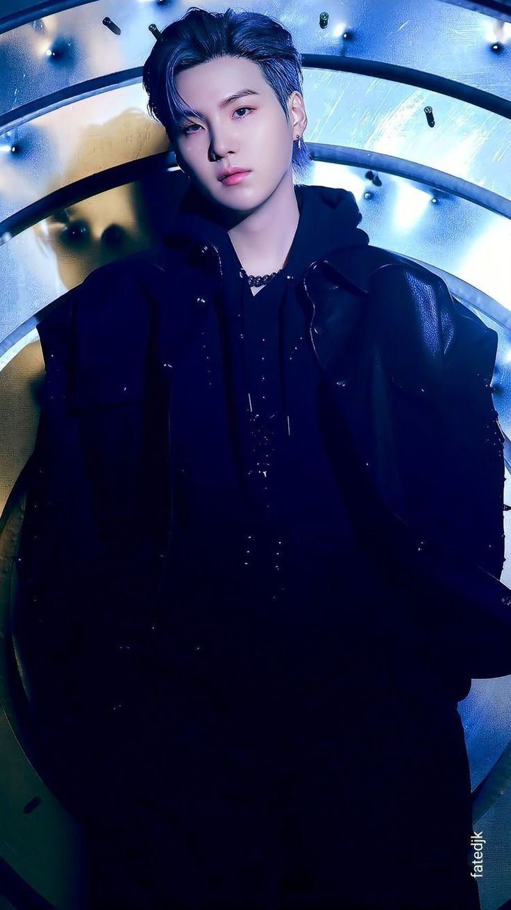

| Nombre | JUNGKOOK(Jeon Jung-kook) |  |
| Nacimiento | 1 de septiembre de 1997 (27 años) | |
| Grupo | BTS | |
| Genero | Masculino | |
| Ocupación | cantante surcoreano | |
| Nacionalidad | Surcoreana | |
| Altura | Altura 1,78 m |
| Nombre | JIN(Kim Seok-Jin) | |
| Nacimiento | 4 de diciembre de 1992 (edad 32 años) | |
| Grupo | BTS | |
| Genero | Masculino | |
| Ocupación | Cantante y compositor de canciones | |
| Nacionalidad | Surcoreana | |
| Altura | Altura 1,79 m |
| Nombre | V(Kim Taehyung) | |
| Nacimiento | 30 de diciembre de 1995 (29 años) | |
| Grupo | BTS | |
| Genero | Masculino | |
| Ocupación | Cantante, compositor, actor, modelo, bailarín, presentador | |
| Nacionalidad | Surcoreana | |
| Altura | Altura 1,78 m |
| Nombre | J-HOPE(Jung Ho-Seok) |  |
| Nacimiento | 18 de febrero de 1994 (31 años) | |
| Grupo | BTS | |
| Genero | Masculino | |
| Ocupación | Bailarín, coreógrafo, rapero, cantante, MC, compositor, productor, modelo | |
| Nacionalidad | Surcoreana | |
| Altura | Altura 1,79 m |
| Nombre | JIMIN(Park Ji-min) | |
| Nacimiento | 13 de octubre de 1995 (29 años) | |
| Grupo | BTS | |
| Genero | Masculino | |
| Ocupación | Cantante, bailarín | |
| Nacionalidad | Surcoreana | |
| Altura | Altura 1,74 m |
| Nombre | RM(Kim Nam-joon) | |
| Nacimiento | 12 de septiembre de 1994 (30 años) | |
| Grupo | BTS | |
| Genero | Masculino | |
| Ocupación | Rapero, cantante, compositor, productor | |
| Nacionalidad | Surcoreana | |
| Altura | Altura 1,81 m |
| Nombre | SUGA(Min Yoon-gi) |  |
| Nacimiento | 9 de marzo de 1993 (32 años) | |
| Grupo | BTS | |
| Genero | Masculino | |
| Ocupación | Rapero, cantante, compositor, productor, bailarín | |
| Nacionalidad | Surcoreana | |
| Altura | Altura 1,76 m |